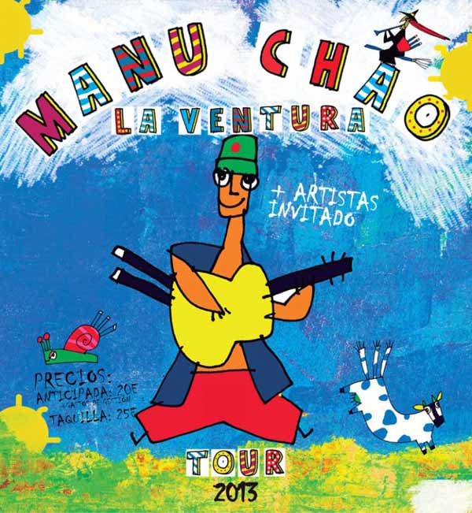

En el marco del tour "La ventura", después de cuatro años sin visitar nuestro país, Manu Chao regresa a Chile para dar una gran gira nacional y reencontrarse con sus seguidores. Según informó el diario La Tercera, el único requisito para emprender este nuevo viaje fue la exigencia de que las entradas tengan valores accesibles para todo el mundo, con precios de entre 12 mil y 15 mil pesos. Sin embargo, la productora Tomaticket rechazó esta versión y precisó que los valores no se han fijado aún y se conocerán recién este 8 de noviembre, cuando salgan a la venta. El músico se presentará el 4 de diciembre en el Estadio Sokol de Antofagasta, el 6 en el Anfiteatro del Mar de Caldera, el 8 en el Velódromo del Estadio Nacional y cerrará su visita el 10 en el Gimnasio Olímpico UFRO de Temuco.
